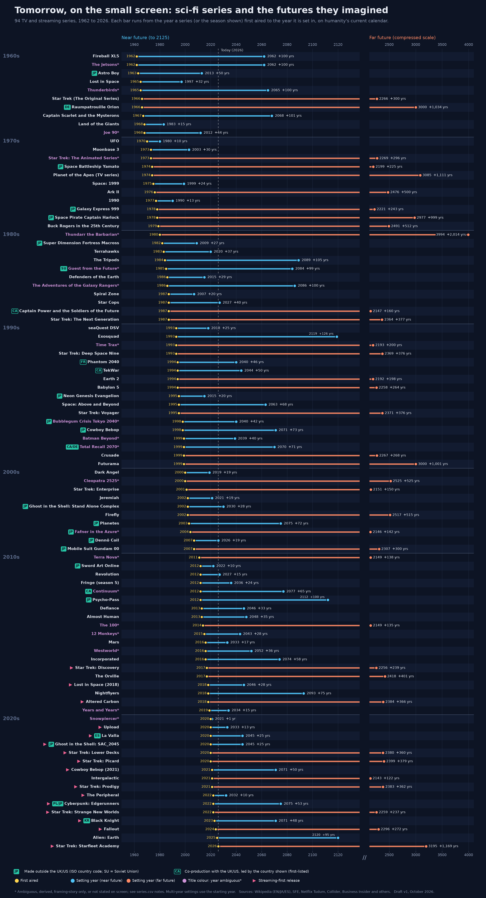

TV series (set aside)
I collected 94 television series set in a named future year alongside the films, but kept them out of the film analysis. I haven't scored them. They could be scored the same way later, if I get round to it.
Series chart (PDF)Download series.csv
